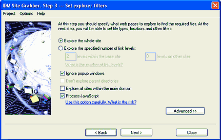

Step 3. Set site explorer filters.
At this step you should specify what web pages to explore to search for required files. Please note that you set the criteria only for explored web pages. You can set file types, location, and other filters for downloaded files on the next step.

The start page that you specified on the first step sets the current site to explore. For example if you specified http://www.tonec.com/support/index.html, the current site would be www.tonec.com with all supported protocols applied to this site name like https://www.tonec.com and ftp://www.tonec.com. On this step you can tell the Grabber to find all files on the current site only, or you can specify the number of levels of web pages to process on the current (this) site and the number of levels of web pages to process on other sites.
Click to learn what is
the number of link levels. Be careful setting a large number of levels for other sites, because it may slow down IDM showing useless files, and it may lead to processing of millions of needless pages.
If you check "Ignore popup windows" box, the Grabber will not explore the web pages that pop up in browsers during page loading. Note that the popup window term is not applicable for the Grabber, it's applicable for web browsers. The grabber doesn't open any browser windows except when you are using a manual authentication.
If the start web page has a path relative to the site name (for example http://www.tonec.com/support/index.html) then "Don't explore parent directories" checkbox will be active. If you check "Don't explore parent directories" box, then the Grabber will not explore parent directories relative to the start page. For example, for http://www.tonec.com/support/index.html, the grabber will NOT explore http://www.tonec.com/index.html and http://www.tonec.com/other/index.html, but will explore http://www.tonec.com/support/file.html and http://www.tonec.com/support/other/index.html
If you check the "Explore all sites within the main domain" box, then the Grabber will explore all other domains which have a common part with the start page domain. For example for http://www.tonec.com/support/index.html, the grabber will explore http://tonec.com http://ftp.tonec.com and http://some.other.domain.tonec.com. On child domains the Grabber will explorer the number of levels specified for the current site.
If you click on "Advanced >>" button, the dialog will expand and let you specify include and exclude filters for the domains/paths within which you need to explore pages You can use asterisk wildcard to match any number of any characters to create a filter pattern.